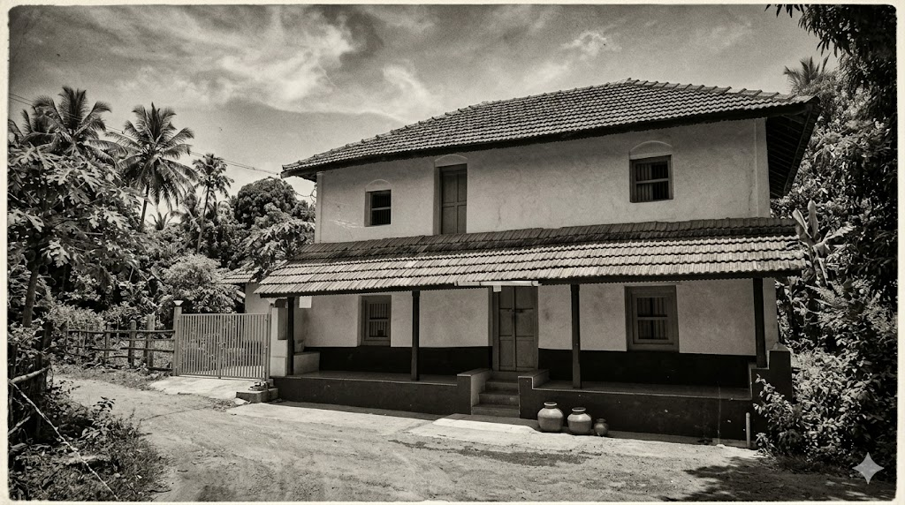
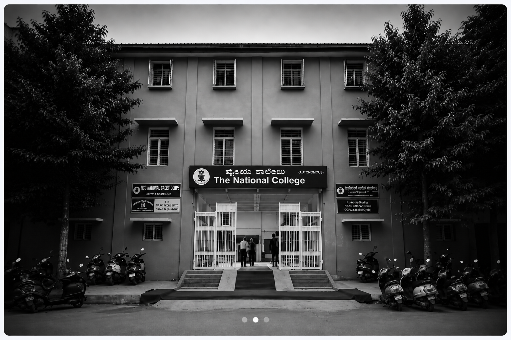
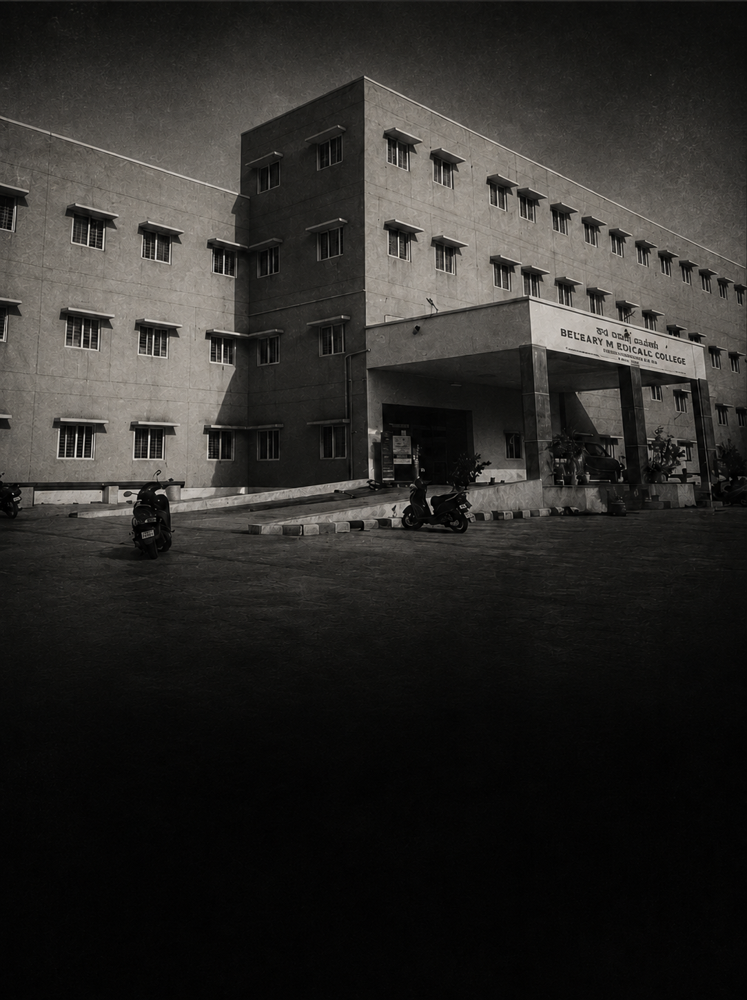
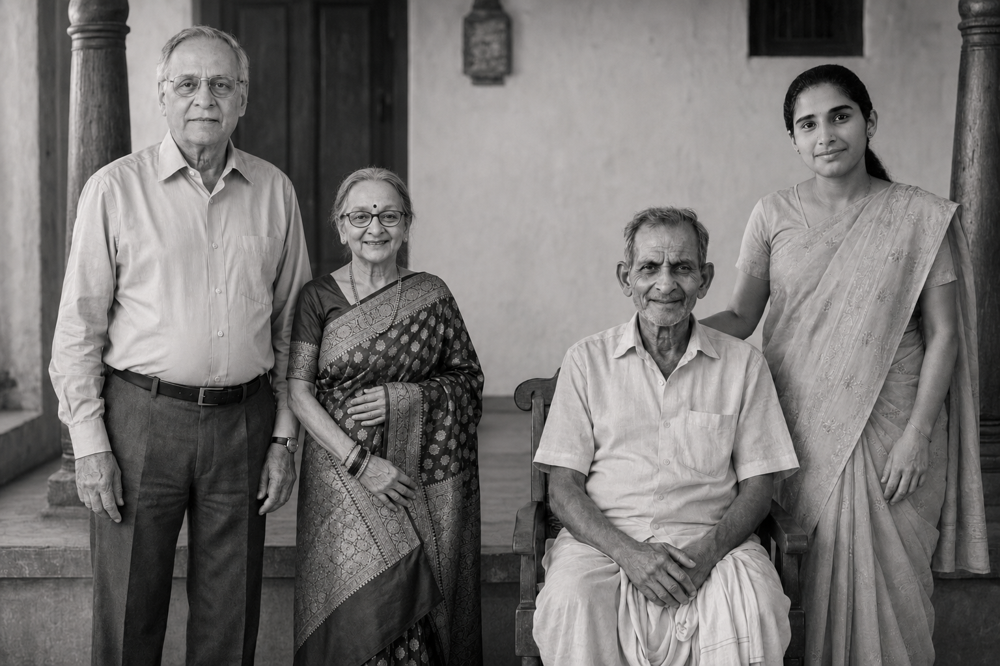

1984—1993
Nine years, three institutions. The slow forging of a pair of hands that would spend the next four decades repairing what time and accident had broken.
Three chapters →From a tiled house in the Malnad hills to forty years in the operating theatre — a life spent setting bone, and people, back in place.

Ch. 01 — The Origins
A village of areca palms and red-tiled roofs, deep in the Malnad. This is the house he was born into — and the distance he would travel from it is the rest of this story.
Nine years, three institutions. The slow forging of a pair of hands that would spend the next four decades repairing what time and accident had broken.
Three chapters →
The first step away from the village. A city classroom, and the long road toward medicine begins.

Five years, one direction. Every ward round shaping the hands that would one day repair what time had broken.
Specialisation. One discipline, given everything — the beginning of a life in orthopaedic surgery.
Two doctors. One family.
The year that changed everything.
Early practice. Building experience, and a reputation, far from home.
Coastal Karnataka. Seven years of quiet service and steady growth.
Home, at last. Spandana Hospital — built from the ground up.
Spandana Hospital · Est. 2007

To the families of Nisarani — your sacrifices built all of this.